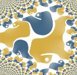

Introduction

Although Python is an easy to learn and powerful programming language as it is
known in common parlance, there is nevertheless need of a good introduction and
tutorial on the Python language.
Why yet another documentation and tutorial on Python?
Aren't there enough websites with tutorials and books dealing with Python?
Isn't there already everything said about the programming language Python?
These were the questions which came to our mind, when we started this website in June 2010.
Yes, there are lots of tutorials and introductions, but we wanted to present a different
approach, with other - more interesting - examples, better explanatory diagrams and so
on. We had a lot to build on, above all the longstanding experience of Bernd Klein as a
computer scientist and Python lecturer. Actually, this online course is based on the material
from the classroom training courses of Bodenseo.
Online Course
Further Topics
Our next Training Courses
Our next open Python classes with Bernd Klein, the author of this website:
Toronto: 3rd - 7th of November, 2014:
Python Training Course in Toronto
London: 20th - 24rd of October, 2014:
Python Intensive Course in London
Berlin: 10th - 14th of November, 2014:
Python Intensive Course in Berlin
Lake Constance / Zurich: 1st - 5th of September, 2014:
Python Intensive Course
Paris: 1st - 5th of December, 2014:
Python Text Processing Course
Munich: 8th - 12th of December, 2014:
Python Training Course
A Course is not a Course
The question is ambiguous. First we want to explain, why this website is called
"A Python Course". This website is seen all over the world
and the expression "course" has varying meanings in the English speaking world.
Both in the United States and Canada, a course is a teaching unit, which might last
e.g. one academic term. The students normally get a grade or some academic credit
for attending the course, usually after having passed an exam.
In the United Kingdom and Australia the term "course" usually defines the complete
programme of studies required to complete a major or a study path leading to a
university degree. The word "unit" is used in the UK to refer to an
academic course in the North American sense.
On the one hand, we had the US and Canadian sense in mind: Our Python is one teaching
unit and when you have successfully passed it, you are capable of programming
in Python. On the other hand, we had the original meaning of the word in mind:
A "course of instruction" as it might be used in book titles like "A Course in
Programming Python".